float 的历史
float 设计的初衷仅仅是： 文字环绕效果
明白了浮动的设计初衷，就可以明白很多 float 特有的行为表现。
包裹与破坏
增强浮动的感性认知
包裹
由这种状态
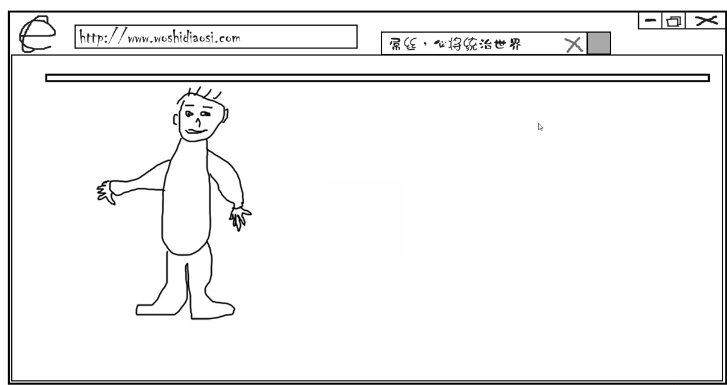
变成这种状态
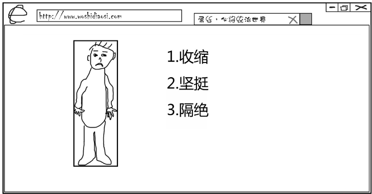
- 收缩，本来它的宽度是很长的，包裹之后宽度变得很窄，跟它的身体宽度是一样的
- 坚挺，原来的高度基本上是没有，突然坚挺了，高度就变成了跟它身高一样
- 隔绝，里面的人发生的任何事情，对外面都不会有任何的影响(
BFC-块级格式化上下文)
具有包裹性的其他小伙伴：
- display: inline-block / table-cell
- position: aboslute / fixed / sticky
- voerflow: hidden / scroll
破坏
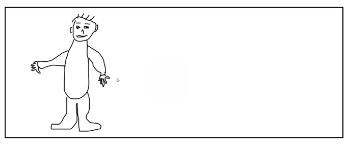
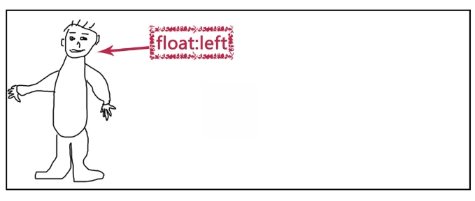
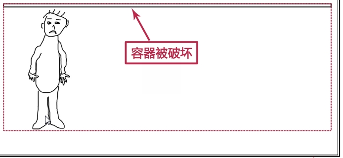
容器被破坏表现行为是 父元素高度塌陷
其他具有破坏性的小伙伴：
- display: none
- position: aboslute / fixed / sticky
被误解的 float
是魔鬼还是情非得已？
众所周知，float 会让父元素高度塌陷！
言论：如何解决浮动让父元素高度塌陷的 bug？
你需要知道的：浮动使高度塌陷不是 bug，而是标准！
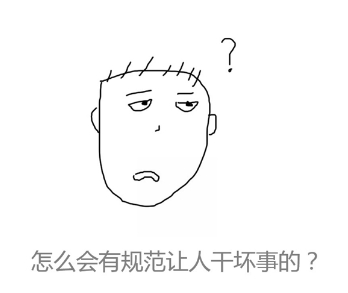
浮动原本的作用仅仅是为了实现文字环绕效果。
利用破坏，实现文字环绕效果！
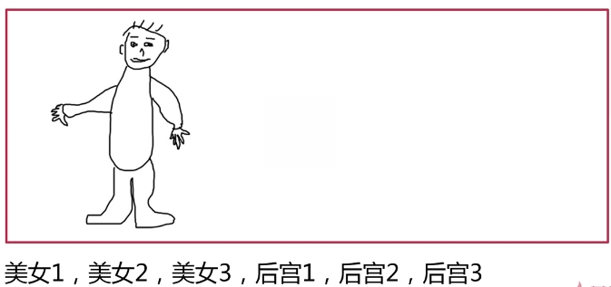
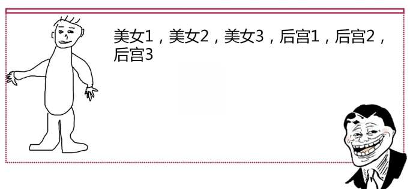
看以下例子：
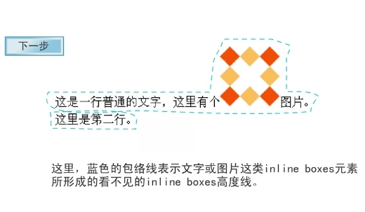
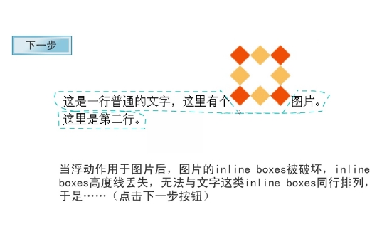
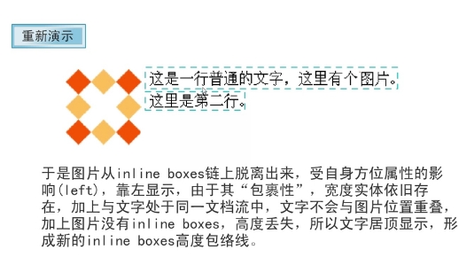
浮动的破坏性只是单纯的为了实现文字环绕效果而已。
因此，父容器高度塌陷根本不是 bug，特性使然！
清除浮动
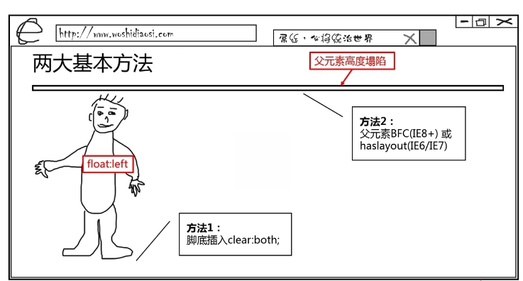
清除浮动的两大基本方法
- 在底部插入一个设置了
clear:both;的元素 - 父元素
BFC（IE8+）或haslayout(IE6/IE7)
方法差异
clear跟外部可以接触，可以发生margin重叠
2.BFC / haslayout跟外部隔绝
clear 通常的应用形式
HTML block水平元素底部走起<div...></div>CSS after伪元素底部生成.clearfix:after
缺点：
div元素会产生多余的div元素after伪元素 - 不兼容IE6/IE7
BFC / haslayout 通常声明
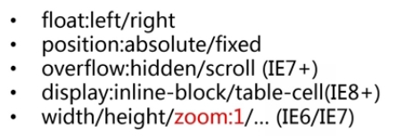
缺点：
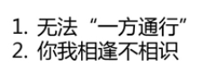
权衡后的策略
1 | <style> |
切勿滥用
.clearfix 应用在包含浮动子元素的父级元素上
浮动的滥用
- 元素
block块状化（砖头化） - 破坏性造成的紧密排列特性（去空格化）
砌砖布局的问题
- 容错性比较糟糕，容易出问题
- 这种布局需要元素固定尺寸，很难重复使用
- 在低版本的
IE下会有很多问题
float 与兼容性
让 IE7 飙泪的浮动问题
含 clear 的浮动元素包裹不正确的问题
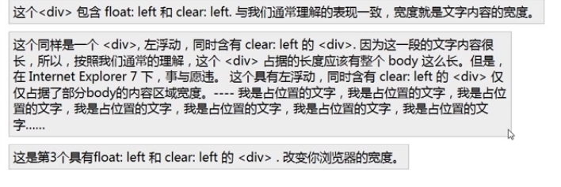
浮动元素倒数 2 个莫名垂直间距问题
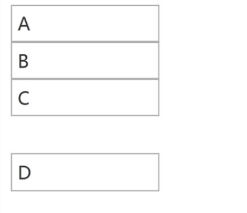
浮动元素最后一个字符重复问题
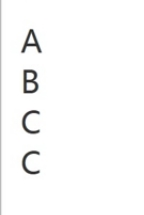
浮动元素楼梯排列问题
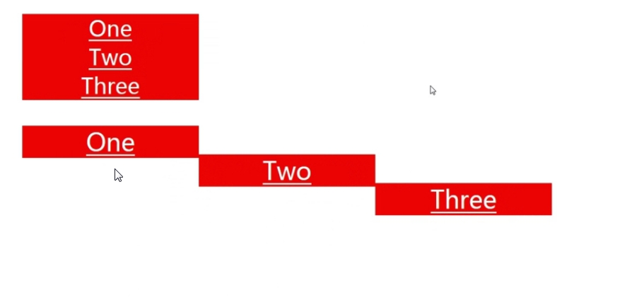
浮动元素和文本不在同一行的问题
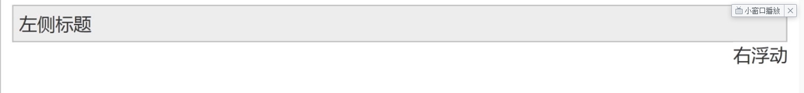
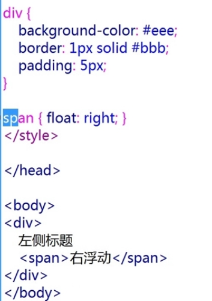